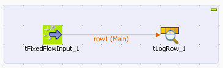
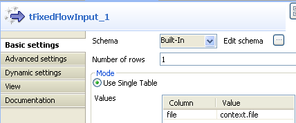
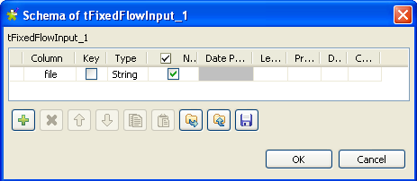
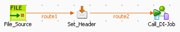
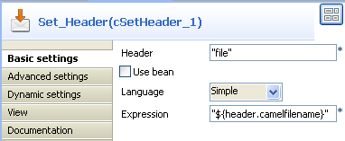
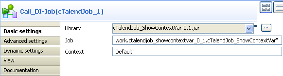
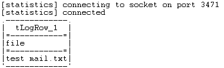

Famille de composant | Processing | |
Fonction | Le composant cTalendJob appelle un Job d'intégration de données exporté en tant que bundle OSGI pour ESB, ou disponible dans le référentiel. | |
Objectif | Le cTalendJob vous permet d'appeler un Job d'intégration de données dans une route de médiation. Pour plus d'informations concernant la conception d'un Job et l'export d'un Job en tant que Bundle OSGI pour ESB, consultez le Guide Utilisateur de Talend Open Studio for ESB. | |
|
Basic settings | Repository |
Sélectionnez cette option pour appeler un Job du Repository. |
| External | Sélectionnez cette option pour appeler un Job exporté en tant que bundle OSGI pour ESB. | |
| Job | Ce champ apparaît lorsque l'option Repository est sélectionnée. Cliquez sur [...] pour afficher l'arborescence Job Designs et sélectionnez le Job que vous souhaitez appeler dans votre Route. | |
| Version | Ce champ apparaît lorsque l'option Repository est sélectionnée. Sélectionnez la version du Job si plus d'une version du Job est disponible. | |
Library | Ce champ apparaît lorsque l'option External est sélectionnée. Sélectionnez dans la liste la bibliothèque que vous souhaitez importer ou cliquez sur le bouton [...] pour importer la bibliothèque jar de votre Job. | |
| Job | Saisissez le nom du package et le nom de votre Job séparés par un point. Par exemple :
route_project.txmlmap_0_1.tXMLMap. Pour
obtenir ce nommage, ouvrez la bibliothèque jar de votre Job, allez à
OSGI-INF > blueprint et éditez le fichier .xml du
Job. Le nommage est disponible dans le nœud d'un bean comme
|
| Context | Sélectionnez dans la liste ou saisissez le nom du contexte à utiliser pour exécuter votre Job. |
Utilisation | Le cTalendJob peut être utilisé en tant que composant de début, composant intermédiaire ou composant de fin dans une Route. | |
Limitation | n/a | |
Dans ce scénario, un Job d'intégration de données est construit avec une variable de contexte définie dans la perspective Integration. Ensuite, une Route est conçue dans la perspective Mediation avec l'en-tête du message défini de la même façon que la variable de contexte dans le Job d'intégration de données. Un composant cTalendJob est déployé pour appeler le Job d'intégration de données et passer la valeur de l'en-tête du message de la Route à la variable de contexte du Job d'intégration de données.
Dans la perspective Integration, déposez les composants suivants de la Palette dans l'espace de modélisation graphique : un tFixedFlowInput et un tLogRow.
Reliez les composants à l'aide d'un lien Row > Main.
Double-cliquez sur le tFixedFlowInput pour ouvrir sa vue Basic settings.
Cliquez sur le bouton [...] à côté du champ Edit schema pour ouvrir l'éditeur du schéma.
Cliquez sur le bouton [+] pour ajouter une ligne.
Saisissez file comme nom de colonne et sélectionnez String dans la colonne Type.
Cliquez sur OK pour fermer l'éditeur.
Sélectionnez l'option Use Single Table et saisissez context.file dans le champ Value de la table Values.
Notez que le contexte default avec la variable file a été défini.
Pour plus d'informations concernant la configuration du contexte, consultez le Guide utilisateur de Talend Open Studio for ESB.
Double-cliquez sur le tLogRow pour ouvrir sa vue Basic settings.

Sélectionnez Table (print values in cells of a table pour un meilleur affichage des résultats.
Appuyez sur les touches Ctrl+S afin de sauvegarder votre Job.
Exportez le Job en tant que OSGI Bundle for ESB.
Dézippez le fichier jar généré.
Dans la perspective Mediation, déposez les composants de la Palette dans l'espace de modélisation graphique : un cFile, un cSetHeader et un cTalendJob, respectivement nommés File_Source, Set_Header et Call_DI-Job.
Reliez les composants à l'aide de liens Row > Route.
Double-cliquez sur le composant cFile pour ouvrir sa vue Basic settings.

Dans le champ Path, saisissez la variable context.root_dir pour spécifier le chemin d'accès au fichier.
Laissez les autres paramètres tels qu'ils sont.
Pour plus d'informations concernant la configuration du contexte, consultez le Guide utilisateur de Talend Open Studio for ESB.
Double-cliquez sur le cSetHeader pour ouvrir sa vue Basic settings.
Cliquez sur [+] pour ajouter une ligne au tableau Headers.
Dans le champ Name, saisissez file, comme pour la variable de contexte du Job d'intégration de données.
Sélectionnez Simple dans la liste Language.
Dans le champ Value, saisissez ${header.camelfilename} afin d'obtenir le nom du fichier.
Double-cliquez sur le cTalendJob pour ouvrir sa vue Basic settings.
Sélectionnez l'option External et cliquez sur le bouton [...] afin de parcourir votre système jusqu'au fichier jar généré pour le Job d'intégration de données.
Dans le dossier dézippé du fichier jar ci-dessus, ouvrez job.xml dans le dossier <DI_Job_JAR_Path>\OSGI-INF\blueprint, E:\cTalendJob_ShowContextVar-0.1\OSGI-INF\blueprint dans cet exemple.
Dans la balise bean, copiez le contenu de l'attribut class, work.ctalendjob_showcontextvar_0_1.cTalendJob_ShowContextVar dans cet exemple.
Collez-le dans le champ Job.
Appuyez sur Ctrl+S pour sauvegarder la Route.
Cliquez sur l'onglet Code au bas de l'espace de modélisation graphique afin de visualiser le code généré.

Comme affiché ci-dessus, le
File_Sourcefournit un fichier pour l'échange de messages. LecSetHeaderconfigure l'en-tête d'un message et utilise le nom du fichier source comme valeur de l'en-tête. Cette valeur est passée aucTalendJob_1pour exécution du Job d'intégration de données.Appuyez sur F6 pour exécuter la Route.
Placez un fichier dans le dossier spécifié par context.root_dir, test mail.txt dans cet exemple.
Vous pouvez visualiser le résultat.
Comme affiché ci-dessus, le nom du fichier source est affiché via le composant tLogRow, puisque la valeur de l'en-tête du message de la Route a été passée à la variable de contexte du Job d'intégration de données.